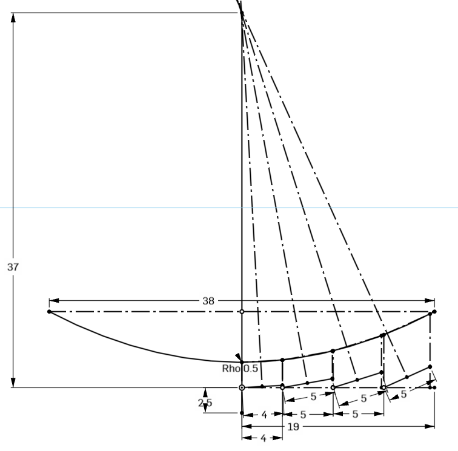
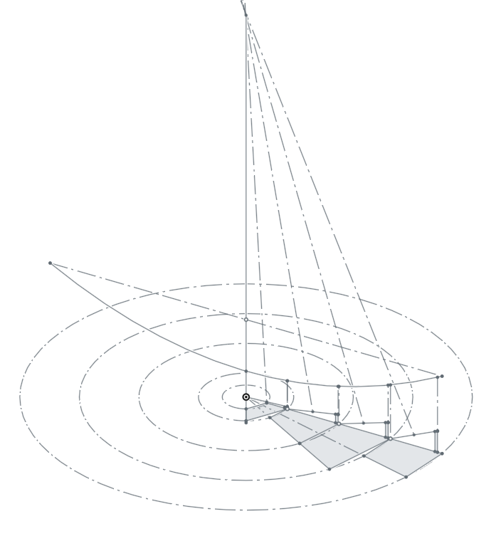
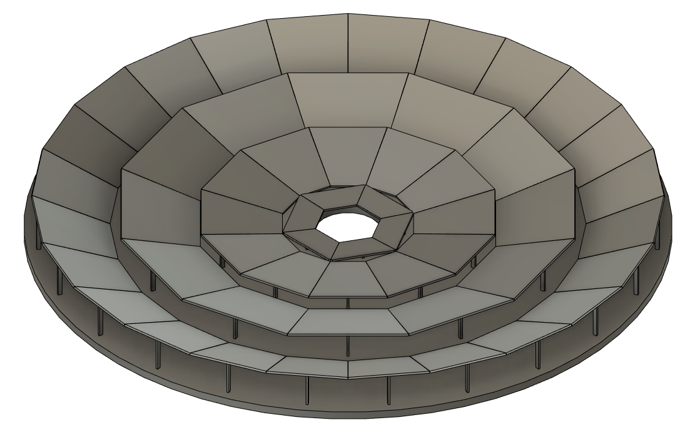
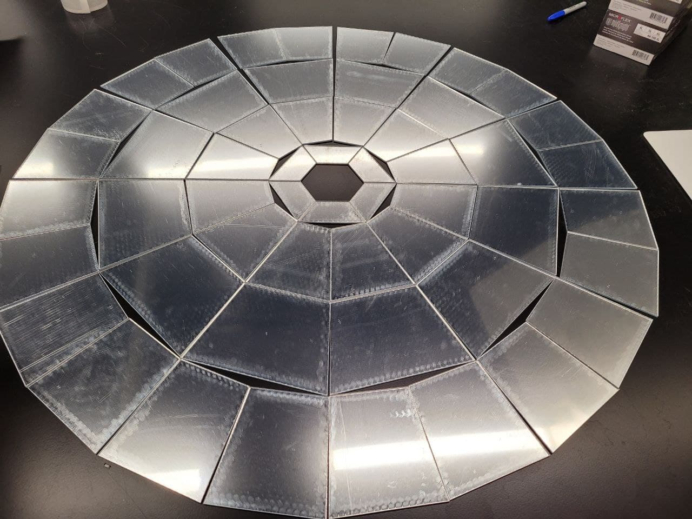

<topbar style="display:none;">
<item><a href="../index.html">Home</a></item>
<item><a href="../about.html">About</a></item>
</topbar>
<!-- This is a comment, it is ignored by the compiler/interpreter -->
# Week 9
<div></div>
## Overview
<div></div>
This week we built the first full-scale prototypes for our designs. I laid out the reflector angles and spacing in OnShape, after running into issues with Fusion's constraint solver failing to properly recognize sketch mates involving conic sections.
We were told that outer diameter of the reflector could not go much above 3 feet, and the approximate heat transfer surface area required to reach useful temperatures for this was found to have a diameter of about 4 inches. I broke the reflector up into 4 radial sections with widths that would lead to approximately the collector area when at the focal point. The focal point was chosen to be 37", about as long as reasonably possible to keep the mirror flatter and thus reduce error from the discrete angle approximation inherent to the fresnel reflector.


With the side profile laid out, I transferred the dimensions of all the quadrilateral reflector pieces into fusion to build a 3D mockup. The angles and reflector lengths also allowed me to dimension and make the reflector stands, which hold each piece at the correct angle/height. If I did my math wrong, then I shouldn't have to cut more reflectors and can just adjust the height of these stands.
<center></center>
With the CAD model of the reflector finished I cut out the reflector pieces from acrylic. Mirrored, 1/8 inch acrylic sheets were used after work last week found that gluing mylar to a surface leads to roughness that is difficult to control. The cut out pieces are shown below; they don't appear particularly reflective as I left the protective coating on until after everything is fabricated and connected. I will be cutting out the stands next week from wood or some thicker 1/4 inch material.
<center></center>